"Coaching heeft ervoor gezorgd dat ik 40 kilo ben afgevallen. Ik ga consistent elke week 4x naar de gym. Een veel betere mindset, veel meer zelfvertrouwen. Ik zit lekker in mijn vel. Kan me geen beter coachingstraject wensen. En we zitten in een groep met dezelfde likeminded people."Bob · DFC-community
Echte broeders, echte resultaten
Bewijs weegt zwaarder dan beloftes
Alles op deze pagina komt van echte cliënten: hun foto's, hun kilo's, hun woorden uit Instagram-reacties en de DFC-community. Niets aangedikt, hooguit ingekort.
Before / after
Na het coachingstraject
 Voor
Voor Na
Na Voor
Voor Na
Na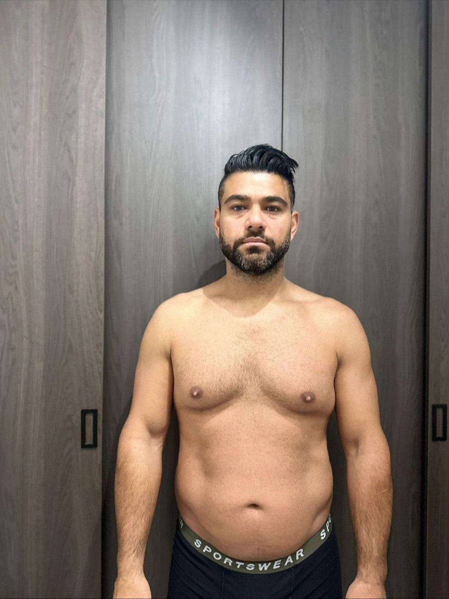
Voor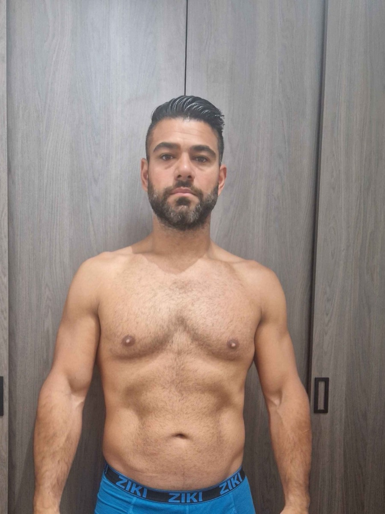
Na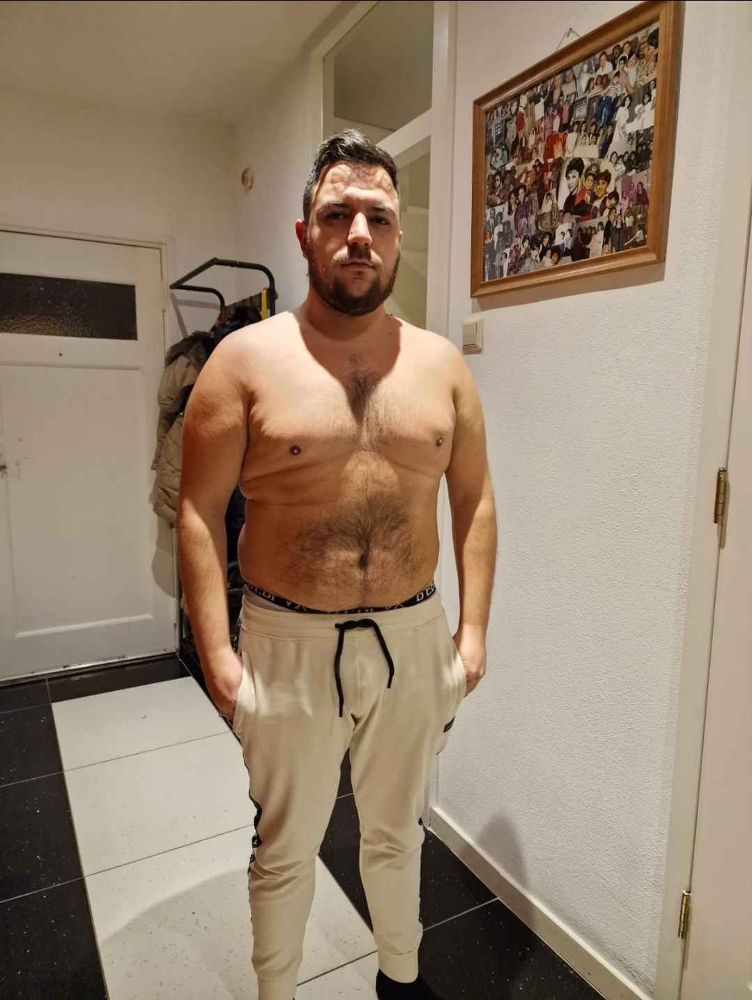
Voor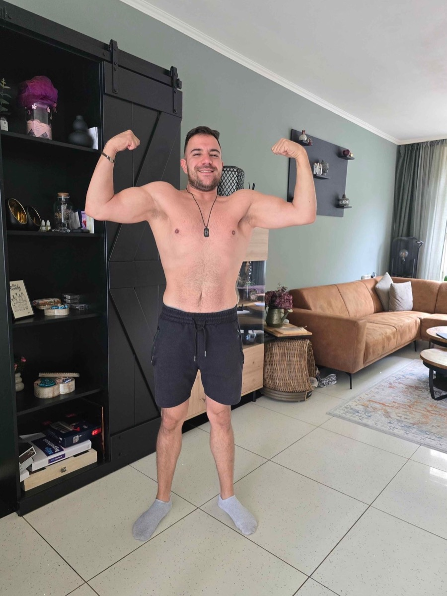
Na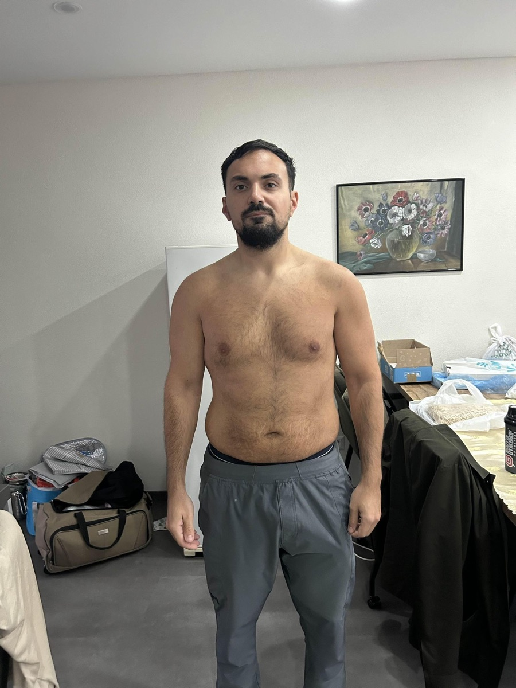
Voor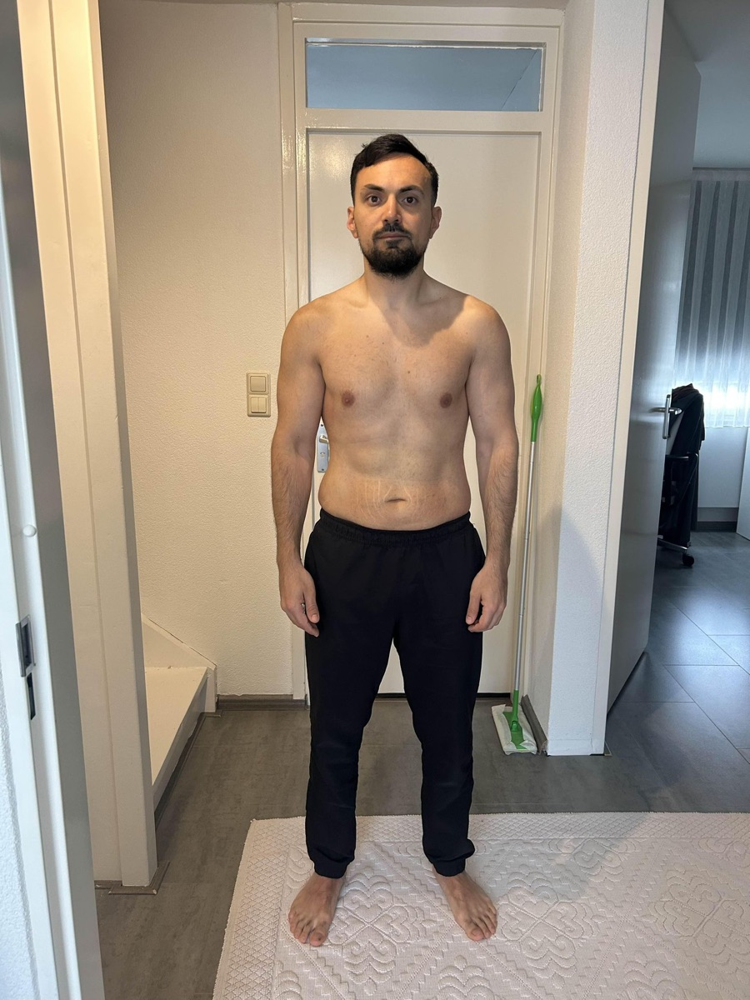
Na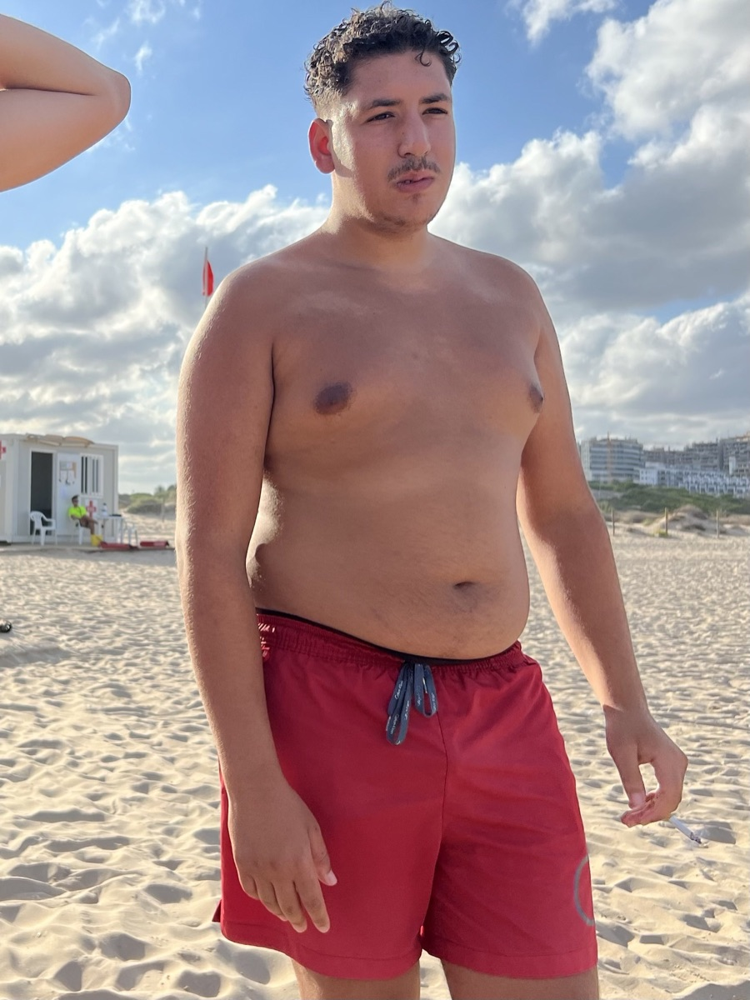
Voor Na
Na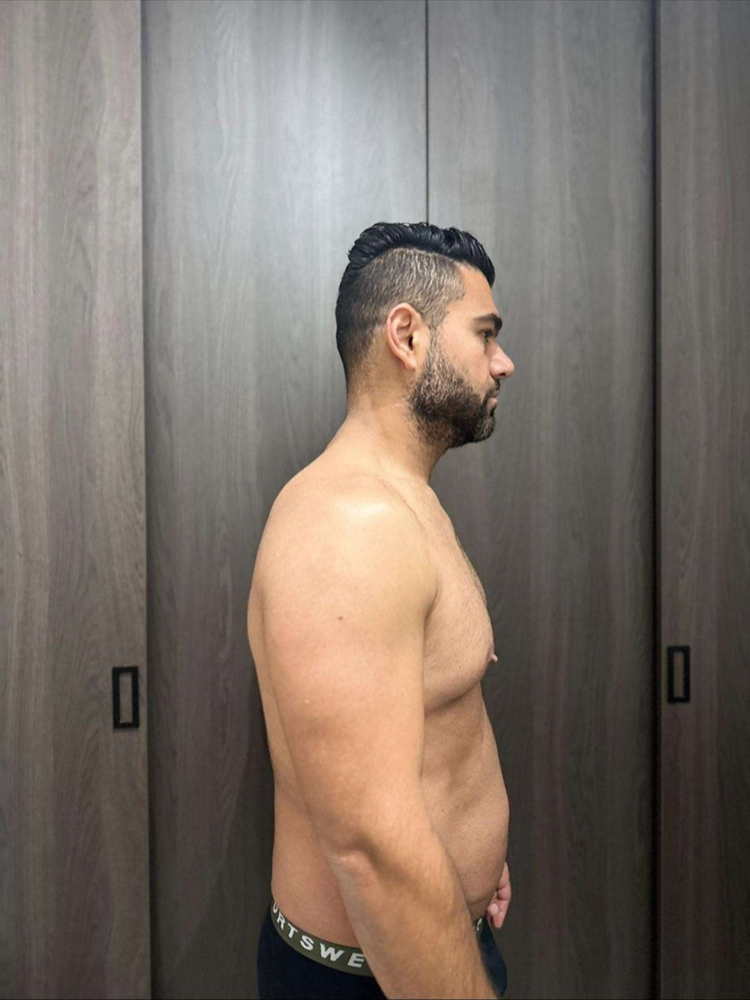
Voor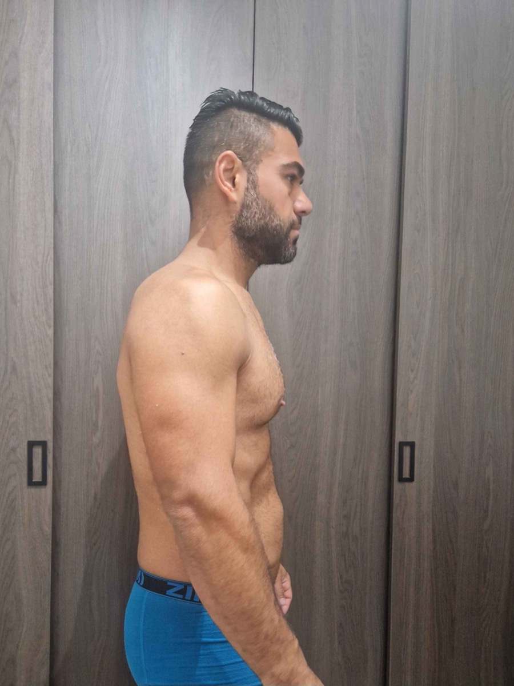
Na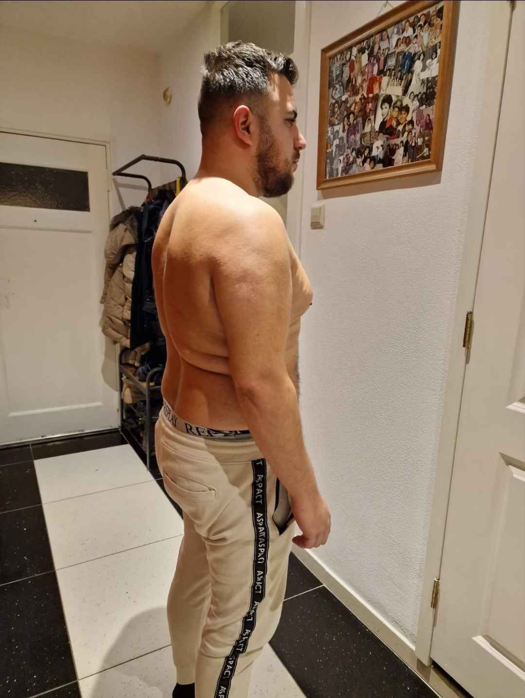
Voor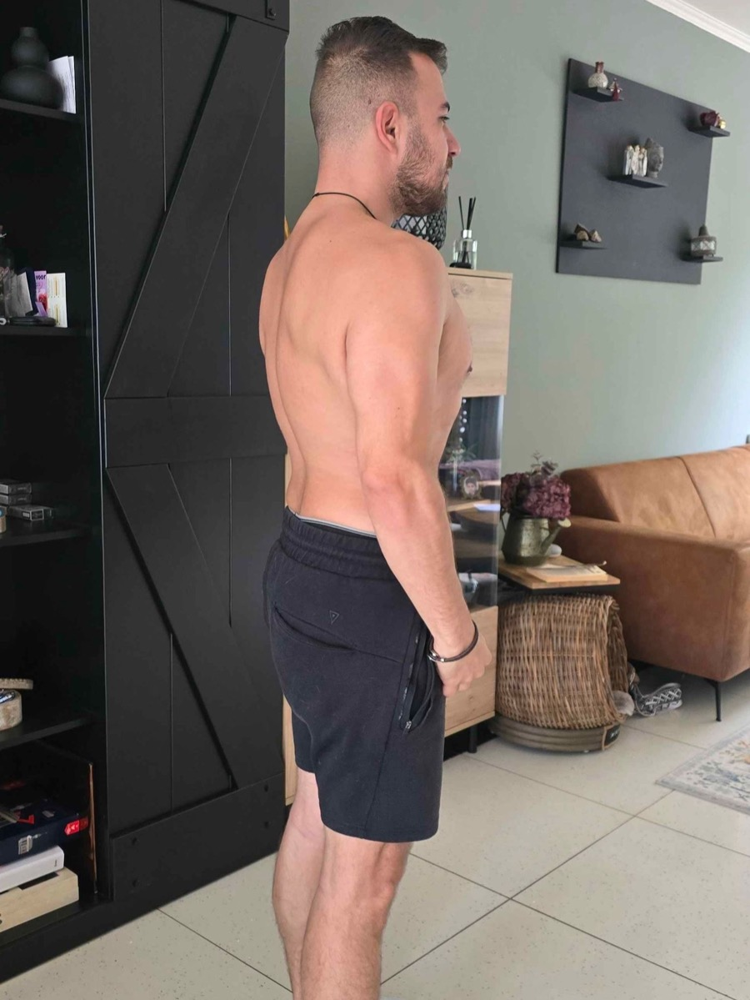
NaIn hun eigen woorden
Reviews van cliënten
Rechtstreeks uit Instagram-reacties en de besloten DFC-community op Discord.
"Door coaching ben ik 30 kilo kwijtgeraakt en heb ik onlangs een fotoshoot gehad. Ik ben fysiek en mentaal enorm veranderd. Waar ik eerder bij zware momenten snel terugviel in oude patronen, heb ik nu geleerd hier beter mee om te gaan en verder te bouwen."Süley · DFC-community
"Dankzij coach Ertuğrul ben ik van 97 kg naar 79 kg afgevallen. Ik kreeg duizenden complimenten en het heeft gewoon m'n lifestyle veranderd. Ik eet lekkere recepten en ik hoef niet in de gym te leven voor maximale resultaten."Ali · DFC-community
"Pff wat heeft coaching gebracht… buiten m'n transformatie van 100+ kg naar ±77 kg ook discipline, structuur, een gezonde levensstijl en zelfvertrouwen. En zo kan ik nog wel een hele lijst schrijven."Deger · DFC-community
"Ik was begonnen met 108 kg en zit nu op 96,5 kg. Maar vooral: ZELFVERTROUWEN. Complimenten, hoe kleding zit, hoe ik in de spiegel ben: dikke motivatie's voor mij."Muhammed · DFC-community
"Met Ertuğrul ben ik 22 à 23 kilo afgevallen zonder mezelf te verhongeren. Langzamerhand leer je wat gezond en gebalanceerd eten is. Je zelfvertrouwen gaat omhoog."Aimane · DFC-community
"Ik heb in jaren nog nooit zoveel progressie geboekt als bij hem. Mijn buik die ontzettend groot was, is letterlijk behoorlijk weggetraind in bijna 12 weken. Hij is eerlijk en zegt wat je nodig hebt, en geen gezeik en troep. 100% kwaliteit!"ser__75 · via Instagram
"Coaching ben ik in het begin 10 à 13 kilo kwijtgeraakt. Zit beter in m'n vel en begon kleren weer te passen die me niet pasten. De resultaten blijven komen door hard werk, maar ook door de juiste begeleiding."Anish · DFC-community
"Ik ben zelf diëtist en heb al jaren trainingservaring, maar hoe goed je het ook zelf weet: jezelf begeleiden is een ander verhaal. Ertuğrul biedt alles wat ik nodig heb op coachingsgebied. Ik leer eindelijk de coachrol bij mezelf los te laten."rooslondon · via Instagram
"Sinds ik bij Ertuğrul ben gekomen ben ik blij met de planning. Je kan met elke vraag bij hem terecht en je krijgt altijd antwoord terug. Ik ben echt heel wat afgevallen binnen 2 maanden."lokothehague · via Instagram
"Een fitnesscoach herken je aan een serieuze naam: Ertuğrul."shabo19 · via Instagram
"Coaching levert meer op dan je denkt. Niet alleen een eet- en sportschema: ik heb gemerkt dat ik hierdoor een gezondere levensstijl ben gaan starten."kerem.esmer76 · via Instagram
Jouw naam hiertussen?
De volgende transformatie is die van jou
Elke broeder hierboven begon met hetzelfde: één gratis kennismakingsgesprek.